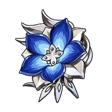
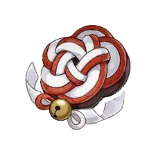
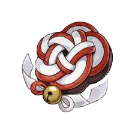
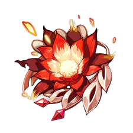
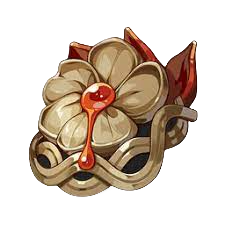
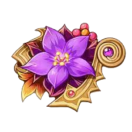
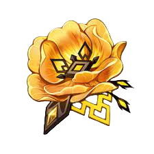
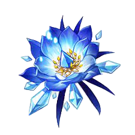

DPS stands for 'Damage per Second'. Thus, a DPS is the character on your team who deals the most damage, and, depending on your playstyle, spends the most amount of time on field. There are many kinds of DPS (and different kinds of different kinds, its confusing), but I will be refering to them using my own terminology. Different sources will use different words, but this is just how I refer to them. The kinds of DPSes are; Physical, Elemental, and, if you're feeling fancy, Hybrid.
'Pro' Tip: attack is not the only thing you should be building on a DPS!
A physical DPS is a DPS that relies mostly or entirely on their normal attacks to deal huge amounts of damage. Catalyst users cannot be this kind of DPS*. There are two types of physical DPSes, normal attack, and charged attack. Each of these types also have individual builds that can be used.
There are multiple different artifact sets you can use to build this DPS, but I will be covering one build; 2 piece Bloodstained Chivalry and 2 piece Pale Flame.
2 piece Bloodstained Chivalry and 2 piece Pale Flame provides a 25% Physical DMG Bonus, for a total of 50% physical dmg bonus. Circlet should always be Crit Rate, no matter the type of DPS (you could go for Crit DMG, but considering you start out with 50% Crit DMG, you will see results faster if you start with Crit Rate). Goblet will always be your off-piece, considering how many main-stats there are for this artifact. For this build use Physical DMG Bonus (attack main-stats only give 46.6% at level 20, as is calculated differently, whereas Physical DMG Bonus multiplies all physical dmg by that number). Finally, your Sands will always be ATK. In total, you should have 108.3% Physical DMG Bonus. Focus on Crit Rate and Crit DMG substats.

*using the Dragonspine Catalyst (obtained via the Frostbearing Tree), your attacks have a chance to deal physical damage. If you want to be a mega-chad, 100% do this. I would love to see what happens.
A hybrid DPS does less damage with their normal attacks, but makes up for it by doing more damage with their elemental attacks. This roughly evens out, and the main reason someone chooses a specific DPS is playstyle. There are a couple artifact sets I could suggest, but I will only be going over one; 2 piece elemental artifact set, 2 piece Shimenawa's Reminiscense.
2 piece Elemental Artifact Set (meaning artifacts like Viridescent Venerer, Crimson Witch of Flames, Heart of Depths, Thundering Fury, Archaic Petra, and Blizzard Strayer*) provides 15% Elemental DMG Bonus, and Shimenawa's Reminiscense provides 18% ATK Bonus. Yet again, Circlet should always be Crit Rate. Goblet should be ATK, and Sands should be ATK%, unless you feel confident your weapon is providing enough ATK, in which case you could use Energy Recharge. For substats, focus on Crit Rate and Crit DMG.
 

*to be an even more ultra-mega-chad, you could choose an artifact set that isn't your DPSes vision, and use someone like Chongyun to infuse your normal attacks with that element. Imagine a cryo Hu Tao!
An Elemental DPS is very similar to an Elemental Support, and sometimes cannot be distinguished. Characters that infuse their normal attacks with their element best utilize this, such as Xiao, Chongun or Hu Tao. Best set (In my opinion, you may find better results elsewhere) would be 4 piece Elemental Artifact Set.
4 piece Elemental Artifact Set provides 15% Elemental DMG Bonus, as well as increased damage from elemental reactions. The best reactions are (by popular opinion and just by facts) Vaporize and Melt. Pair your Elemental DPS with an Elemental Support for big numbers. Circlet will always be Crit Rate. Goblet is best as Elemental DMG Bonus, and Sands should be ATK% or Energy Recharge (I personally would use a weapon of the Favonious series, or even the Sacrifical weapons for their ER and passives)





In order to tap into the true potential of a character, supports are necessary. For example, they can take your Zhongli Burst DMG from 47k to 126k!*
There are many different types of supports, though in order to be a truly amazing support, a character should be able to somehow buff the DMG of your DPS.
*In this example, Zhongli is given R5 The Catch, Emblem of Severed Fate, Geo DMG Goblet, and ~60/120 crit rate/dmg. His supports are as follows:
Together, these supports give Zhongli 88% more ATK, 700 more ATK, 10% Geo DMG Bonus, and 60% Bonus DMG.
The following is a non-comprehensive list of characters with buffing capabilities:
All of these characters have some sort of ability to buff their teammates, Some more-so than others. The best built-in buffs are buffs that come from a Skill or Burst, as these will scale with talent and character lvl. Buffs that come from passives or constellations are less desirable, as they have one fixed value.
In order to build a buff support, familiarize yourself with your characters, and read their talents. Build that character with whatever their buff scales off of, and voila!. A buff support is made! However, you are not yet done.
Another huge source of buffs comes from artifacts. Perhaps the best 3 would be Noblesse Oblige, Tenacity of the Millelith, and Viridescent Venerer. Depending on the characters kit, you may choose different artifact sets. For Anemo supports, Viridescent Venerer will almost always be the best option. For characters whose buffs come from their burst, Noblesse Oblige will be best. Tenacity of the Millelith is best used on characters whose Skill hits multiple times, and whose Skill has a low cooldown. If none of these sounds right for your character, Noblesse Oblige is usually a good default.
In addition to artifacts, a few weapons have buffing capabilities. The most easily obtainable would be the 3 star catalyst Thrilling Tales of Dragon Slayers. For those of you who are lucky enough, there are a couple 5 star weapons that also buff your teammates.